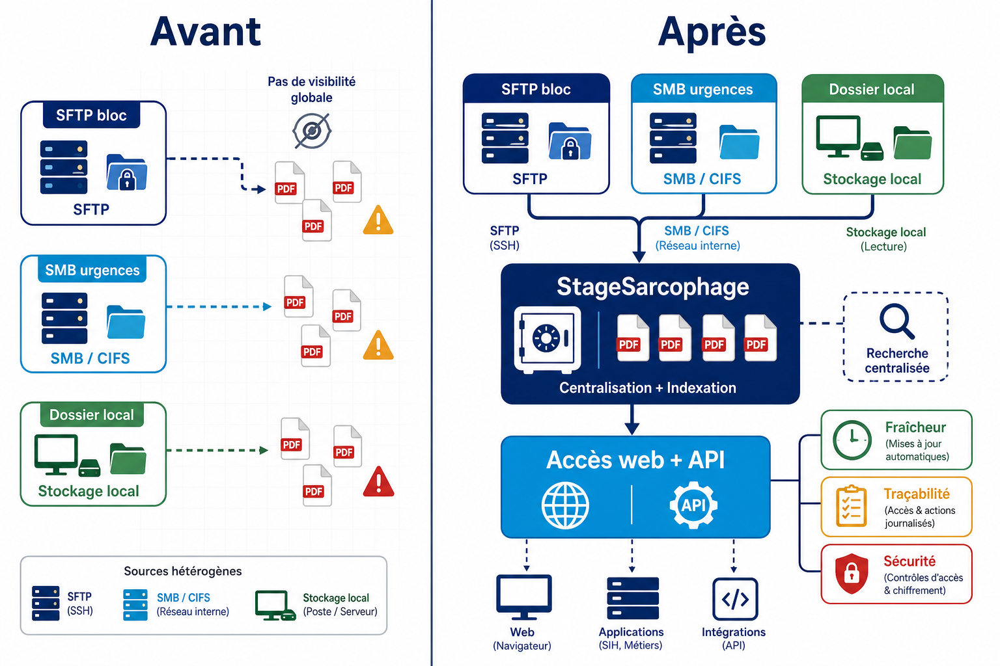
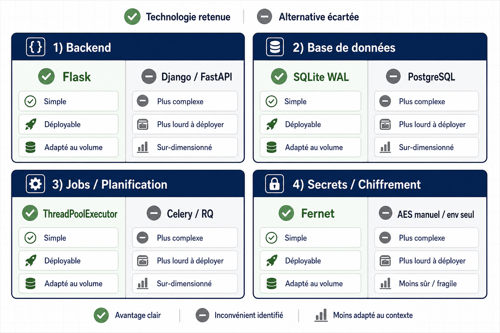
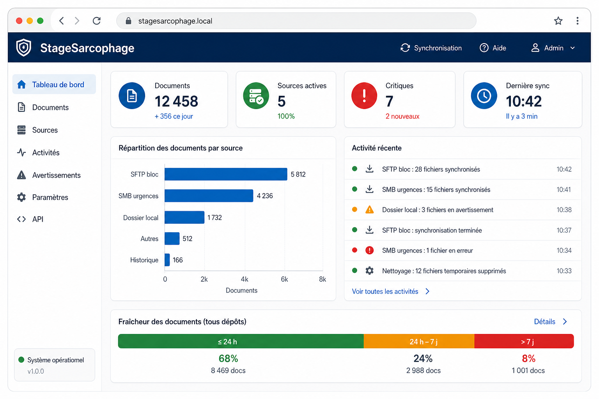
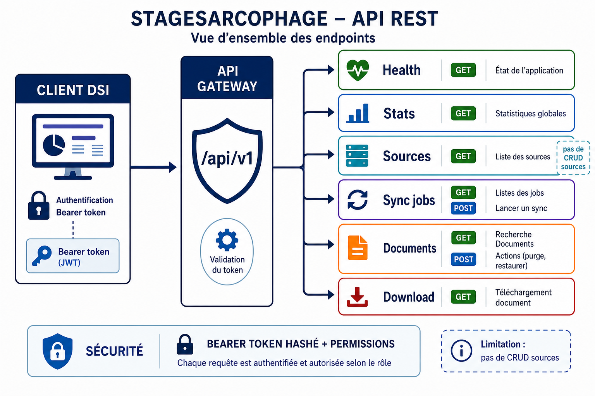
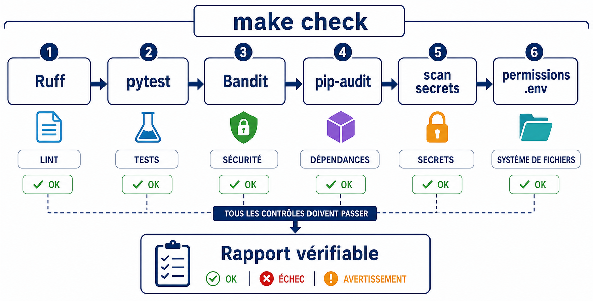

Je remercie Julien Degardin, responsable au sein de la DSI du Centre
Antoine Lacassagne, pour son encadrement pendant ces huit semaines. Ses
retours techniques et sa formulation claire du besoin métier ont aidé à
garder un périmètre compatible avec les contraintes réelles
d’exploitation hospitalière.
Je remercie également Olivier Pantz, tuteur pédagogique à l’IUT Nice
Côte d’Azur, pour le suivi du stage et les conseils méthodologiques. Je
remercie enfin l’équipe de la DSI du Centre Antoine Lacassagne pour son
accueil et pour les échanges qui m’ont permis de comprendre le
fonctionnement informatique de l’établissement.
Résumé
Ce rapport présente un stage de huit semaines réalisé au Centre
Antoine Lacassagne, centre de lutte contre le cancer situé à Nice, au
sein de la Direction des Systèmes d’Information (DSI).
Le besoin portait sur la continuité d’activité. Quand un outil métier
devient indisponible, les équipes soignantes et administratives doivent
retrouver rapidement des documents PDF de modes dégradés : formulaires,
procédures et fiches réflexes. Avant le projet, ces documents étaient
répartis sur plusieurs stockages hétérogènes (SFTP, SMB/CIFS, dossier
local). Aucun outil ne donnait à la DSI une vue centralisée ni un
contrôle simple de leur fraîcheur.
La problématique du stage était donc la suivante : comment
centraliser et fiabiliser l’accès à ces documents critiques, tout en
contrôlant leur fraîcheur, leur traçabilité et la sécurité des accès
dans un environnement hospitalier soumis à des exigences HDS ?
Le travail a suivi quatre phases : analyse du cahier des charges et
des contraintes HDS ; conception de l’architecture Flask/SQLite ;
développement itératif des fonctionnalités (sources, synchronisation,
interface, sécurité, API, tests) ; rédaction de la documentation
d’exploitation.
L’application livrée, nommée StageSarcophage, utilise Flask, Jinja,
SQLAlchemy, SQLite, APScheduler et Docker. Elle collecte les PDF depuis
trois types de sources, calcule un état de fraîcheur par document,
fournit une interface web avec viewer PDF, gère une purge progressive
avec corbeille, expose une API REST et journalise les opérations. Les
contrôles de sécurité couvrent les sessions, les tokens Bearer, le CSRF,
la CSP, le chiffrement Fernet des identifiants et le confinement des
chemins.
Le livrable est une base applicative documentée, testée et
conteneurisable. Il reste à la valider sur l’infrastructure réelle de la
DSI.
Summary
This report presents an eight-week internship at Centre Antoine
Lacassagne, a cancer treatment center in Nice, within its IT department
(DSI).
The project came from a business continuity need. When standard tools
become unavailable, medical and administrative staff need quick access
to degraded-mode PDF documents: forms, procedures and reference sheets.
Before the project, these documents were spread across heterogeneous
servers (SFTP, SMB/CIFS, local storage), with no central tool to track
freshness or availability.
The main question was: how can access to these critical documents be
centralized and secured while keeping freshness tracking, auditability
and access control compatible with HDS requirements?
The work followed four phases: requirements and HDS constraints
analysis; Flask/SQLite architecture design; iterative development
(sources, synchronization, interface, security, API, tests); and
operational documentation.
The delivered application, StageSarcophage, uses Flask, Jinja,
SQLAlchemy, SQLite, APScheduler and Docker. It collects PDFs from three
source types, computes a freshness status for each document, provides a
web interface with an integrated PDF viewer, manages progressive purge
with a trash bin, exposes a REST API and logs operations. Security
controls cover sessions, Bearer tokens, CSRF, CSP, Fernet credential
encryption and path confinement.
The result is a documented, tested and containerizable application
base. The DSI still has to validate it on real infrastructure before
production use.
Sommaire
Remerciements
Résumé et Summary
Table des illustrations et glossaire
Introduction
Partie I : Analyse de la situation
I.1 Présentation du Centre Antoine Lacassagne
I.2 Service DSI et contraintes HDS
I.3 Analyse des besoins
I.4 Cahier des charges et matrice des exigences
Partie II : Conception et réalisation
II.1 Choix technologiques et argumentation
II.2 Architecture applicative
II.3 Sources et synchronisation
II.4 Fraîcheur, purge et corbeille
II.5 Interface web et parcours utilisateur
II.6 API REST
II.7 Sécurité
II.8 Tests et qualité
II.9 Déploiement et exploitation
Partie III : Bilan et perspectives
III.1 Résultats obtenus
III.2 Perspectives et évolutions
Accompagnement du CSU lors des interventions
Types d’interventions
Notions abordées
Environnement informatique hospitalier
Continuité de service en milieu hospitalier
Relation avec les utilisateurs hospitaliers
Difficultés rencontrées
Conclusion
Bibliographie et sitographie
Annexes
Table des illustrations
Table des illustrations
Situation avant et après StageSarcophage
Architecture applicative (couches Flask)
Modèle de données : entités et relations
Flux de synchronisation d’un document PDF
Interface : tableau de bord
Cycle de vie d’un document et purge
Architecture de sécurité
Architecture de déploiement
Analyse comparative des choix technologiques
Vue d’ensemble de l’API REST
Planning prévisionnel et réalisé
Pipeline de qualité make check
Glossaire
API REST : interface HTTP exposée sous
/api/v1, utilisant des tokens Bearer pour
l’authentification.
APScheduler : bibliothèque Python de planification
de tâches périodiques, utilisée pour déclencher les synchronisations
automatiques.
Bearer token : jeton transmis dans l’en-tête
Authorization, permettant l’accès programmatique à l’API
sans session web.
CSRF : Cross-Site Request Forgery : attaque forçant
un navigateur authentifié à envoyer une requête non voulue. Les
formulaires modifiants sont protégés par un jeton CSRF.
CSP : Content Security Policy : en-tête HTTP
limitant les ressources chargées par le navigateur, ce qui réduit la
surface d’attaque XSS.
DSI : Direction des Systèmes d’Information du Centre
Antoine Lacassagne.
Fernet : schéma de chiffrement symétrique
authentifié (AES-128-CBC + HMAC-SHA256), utilisé pour chiffrer les
identifiants des sources en base.
GED : Gestion Électronique de Documents : système
dédié au cycle de vie documentaire complet. StageSarcophage n’est pas
une GED ; il cible uniquement la collecte et la consultation des PDF de
modes dégradés.
HDS : Hébergeur de Données de Santé : certification
française encadrant l’hébergement de données médicales.
Mode dégradé : procédure ou document utilisé lorsque
le fonctionnement normal d’un outil métier n’est plus disponible.
RBAC : Role-Based Access Control : les droits sont
attribués à des rôles, eux-mêmes assignés aux utilisateurs.
SHA-256 : fonction de hachage cryptographique,
utilisée pour détecter les fichiers inchangés et éviter les copies
inutiles.
SFTP : SSH File Transfer Protocol : transfert de
fichiers sécurisé via SSH, utilisé pour les sources Linux.
SMB/CIFS : Server Message Block / Common Internet
File System : protocole d’accès aux partages de fichiers Windows.
SQLite WAL : Write-Ahead Logging : mode d’écriture
de SQLite améliorant les performances en lecture concurrente.
Introduction
Le Centre Antoine Lacassagne utilise plusieurs outils informatiques
pour les soins, le suivi des patients et les procédures administratives.
Lorsqu’un de ces outils devient indisponible (panne réseau, mise à jour
bloquante, incident serveur), le personnel doit continuer à travailler.
Les modes dégradés répondent à ce besoin avec des
procédures et formulaires papier ou PDF qui remplacent temporairement
les outils numériques habituels.
Ces documents existent dans l’établissement, mais leur gestion reste
dispersée : un serveur SFTP Linux pour le bloc opératoire, un partage
SMB Windows pour le service des urgences, un dossier local pour d’autres
services. Il n’existait pas de vue centralisée pour répondre à des
questions simples : ce document est-il encore à jour ? Existe-t-il
toujours sur le serveur source ? Quand a-t-il été modifié pour la
dernière fois ?
La solution devait traiter plusieurs contraintes en même temps :
fédérer des protocoles hétérogènes dans un point d’accès unique ;
calculer un état de fraîcheur documentaire sans saturer le réseau ;
protéger les identifiants de connexion aux serveurs tout en gardant une
administration simple ; déployer l’application sur une infrastructure
hospitalière sans ajouter de composants lourds. La mission confiée par
la DSI était de concevoir et développer une application web interne
répondant à ce périmètre.
StageSarcophage est l’application développée pendant le stage. Elle
collecte les PDF depuis les sources déclarées, conserve une copie locale
avec déduplication, calcule un état de fraîcheur par document, fournit
une interface web de consultation et journalise les opérations. La
figure 1 montre le passage d’un accès dispersé sur plusieurs serveurs à
un accès centralisé, sécurisé et traçable.

Figure 1 : Situation avant et après
StageSarcophage : dispersion des sources et accès
centralisé.
Le rapport suit trois parties. La première présente l’établissement,
la DSI, les contraintes HDS, les besoins et les exigences. La deuxième
détaille la conception et la réalisation technique ; les choix
d’implémentation y sont comparés aux alternatives possibles. La
troisième fait le bilan du projet : résultats obtenus, difficultés
rencontrées, solutions retenues et priorités pour une reprise par la
DSI.
Partie I : Analyse de la
situation
I.1 Présentation
du Centre Antoine Lacassagne
Le Centre Antoine Lacassagne (CAL) est un Centre de Lutte Contre le
Cancer (CLCC) situé au 33 avenue de Valombrose à Nice. Fondé en 1947, il
fait partie des vingt établissements du réseau Unicancer entièrement
dédiés à la prise en charge du cancer. L’établissement accueille chaque
année plus de 15 000 patients et emploie environ 800 personnes. Il
couvre les trois missions des CLCC : soins (oncologie médicale,
radiothérapie, chirurgie), recherche clinique et formation.
Sur le plan informatique, le Centre dispose d’une DSI qui gère
l’infrastructure réseau, les serveurs, les applications métier (dossier
patient informatisé, système d’information radiologique, outils
administratifs) et la sécurité des systèmes. L’établissement traite des
données de santé au sens de la réglementation française. Son système
d’information doit donc intégrer des exigences fortes de sécurité, de
traçabilité et de confidentialité.
I.2 Service DSI et
contraintes HDS
La DSI du CAL intervient sur un périmètre large : gestion des accès,
exploitation des serveurs, déploiement d’applications internes,
sauvegardes et continuité de service. Le contexte hospitalier impose
plusieurs contraintes spécifiques.
Exigences HDS : l’hébergement de données de santé
est encadré en France par la certification HDS (Hébergeur de Données de
Santé). Elle demande des mesures de sécurité documentées, une
traçabilité des accès, des procédures de sauvegarde et une gestion
formalisée des incidents. Pour StageSarcophage, cela se traduit
notamment par le chiffrement des identifiants, les journaux
d’opérations, le contrôle des accès par rôle et la gestion séparée des
secrets.
Continuité d’activité : un établissement de santé
doit continuer à fonctionner lors d’une panne informatique. Des
procédures de mode dégradé existent pour les situations critiques :
panne du dossier patient, indisponibilité du système de prescription,
coupure réseau. Ces procédures reposent sur des documents PDF qui
doivent rester accessibles même lorsque l’outil principal ne l’est
plus.
Contraintes de déploiement : la DSI ne souhaitait
pas maintenir une infrastructure complexe pour une application interne
de portée limitée. Le cahier des charges précisait donc : SQLite
acceptable, pas de serveur de base de données externe requis,
déploiement par conteneur Docker, configuration par variables
d’environnement.
I.3 Analyse des besoins
L’analyse des besoins a structuré la demande en trois niveaux :
Besoins fonctionnels primaires (cœur du système) : -
Déclarer des sources (SFTP, SMB, local), tester leur connexion,
configurer leur fréquence de synchronisation. - Synchroniser
automatiquement les PDF depuis ces sources, en conservant une copie
locale. - Suivre la fraîcheur de chaque document (date de dernière
modification source, statut ok/avertissement/critique). - Permettre la
consultation, la recherche, le filtrage et le téléchargement des
documents depuis une interface web. - Conserver un journal de toutes les
opérations (synchronisations, purges, connexions, erreurs).
Besoins fonctionnels secondaires (qualité
d’exploitation) : - Gestion des utilisateurs, des rôles et des
permissions (RBAC). - API REST pour permettre des intégrations futures
(monitoring, outils DSI). - Purge automatique des documents dépassant
leur durée de rétention, avec passage par une corbeille. - Notifications
par email en cas d’erreur ou de documents critiques.
Contraintes non fonctionnelles : - Sécurité :
chiffrement des identifiants, protection des sessions, headers HTTP,
contrôle des chemins. - Déployabilité : Docker + Gunicorn, configuration
par variables d’environnement, SQLite. - Maintenabilité : code structuré
en couches, tests automatisés, documentation d’exploitation.
I.4 Cahier des
charges et matrice des exigences
Le document cahier_des_charges.md fourni par la DSI
liste les exigences détaillées. En fin de stage, l’état de livraison est
le suivant.
Livré et validé par les tests : sources SFTP, SMB/CIFS et locales ;
test de connexion par source ; synchronisation manuelle et planifiée ;
déduplication SHA-256 ; statuts de fraîcheur ; interface web avec viewer
PDF, téléchargement et export ZIP ; RBAC ; chiffrement Fernet des
identifiants ; journaux d’opérations.
Partiel : la purge fonctionne, mais certains paramètres avancés n’ont
pas été démontrés en recette ; l’API REST couvre la lecture, les
statistiques, le déclenchement de synchronisation et le suivi des jobs,
mais pas le CRUD sur les sources.
Non entièrement résolu : LDAP est configurable mais non validé sur
annuaire réel ; HTTPS est assuré par le reverse proxy, pas par Flask
directement ; le benchmark “500 PDF en moins de 5 minutes” n’a pas été
prouvé ; la sauvegarde automatique n’a pas été livrée.
Le projet a été planifié sur huit semaines : analyse (S1),
architecture et modèle de données (S2), connecteurs et sources (S3),
synchronisation et fraîcheur (S4), interface web (S5), sécurité et API
(S6-S7), tests et documentation (S8).
Le planning réalisé a suivi le planning prévisionnel dans ses grandes
lignes. La partie sécurité et API a pris plus de temps que prévu ; ce
décalage a été absorbé en concentrant les tests et la documentation sur
la dernière semaine.
Figure 11 : Planning prévisionnel et
réalisé : 8 semaines de stage avec sécurité/API prolongée.
Partie II : Conception et
réalisation
II.1 Choix
technologiques et argumentation
Les choix techniques partent du cahier des charges et des contraintes
d’exploitation. Chaque composant a été choisi après comparaison avec des
alternatives plus lourdes ou moins adaptées au besoin.
Backend : Flask
Flask est explicitement référencé dans le cahier des charges. Il est
léger, son rendu HTML côté serveur via Jinja est natif et son
déploiement derrière Gunicorn reste simple. Django apporte davantage de
fonctionnalités intégrées, mais l’application n’avait pas besoin d’un
framework complet avec administration, ORM imposé et structure projet
plus lourde. FastAPI aurait été pertinent pour une API principalement
asynchrone, moins pour une application dont l’interface web est rendue
côté serveur.
Base de données : SQLite
via SQLAlchemy
SQLite en mode WAL est explicitement autorisé par le cahier des
charges. Il est embarqué dans Python, ne nécessite aucune installation
et se sauvegarde par copie de fichier. Ses limites concernent surtout
les écritures concurrentes, mais le volume attendu reste faible :
quelques synchronisations planifiées, des consultations web et des
opérations d’administration. SQLAlchemy conserve une possibilité de
migration vers PostgreSQL si le volume ou la concurrence augmentent.
File de jobs :
ThreadPoolExecutor
Le volume attendu est de quelques dizaines de synchronisations par
jour. Un ThreadPoolExecutor interne suffit pour lancer ces
tâches sans dépendance supplémentaire. Celery ou RQ apporteraient une
meilleure persistance des jobs et une reprise plus propre après
redémarrage, mais imposeraient Redis et un worker séparé. Ce coût
d’exploitation n’était pas justifié pour le périmètre demandé. La perte
d’un job en cours lors d’un arrêt du conteneur est donc documentée comme
limite connue.
Chiffrement des
identifiants : Fernet
Fernet fournit un chiffrement symétrique authentifié avec HMAC-SHA256
intégré. La bibliothèque est maintenue, documentée et évite
d’implémenter soi-même AES-CBC, ce qui réduirait la marge d’erreur sur
des points sensibles comme l’IV ou le MAC. Stocker uniquement les
identifiants dans des variables d’environnement n’aurait pas protégé la
base si quelqu’un obtenait une copie du fichier SQLite.

Figure 9 : Analyse comparative des choix
technologiques : Flask, SQLite, ThreadPoolExecutor, Fernet face aux
alternatives.
II.2 Architecture
applicative
StageSarcophage est un monolithe Flask organisé en couches
distinctes. Cette organisation limite le mélange entre accès HTTP,
règles métier et accès aux fichiers, ce qui rend le code plus facile à
tester et à reprendre.
La figure 2 positionne StageSarcophage entre les sources hétérogènes,
les utilisateurs web et les clients API.
Figure 2 : Architecture applicative de
StageSarcophage : couches Flask, services et stockage.
Les routes HTTP (app/routes/) gèrent uniquement
l’authentification, la lecture des paramètres, la délégation aux
services et le rendu. Les services (app/services/) portent
la logique métier : synchronisation, purge, jobs de fond, notifications,
LDAP, connecteurs. Les modèles SQLAlchemy (app/models/)
définissent le schéma de données et les invariants. Les utilitaires
(app/utils/) fournissent des fonctions transverses :
sécurité des chemins, chiffrement, sanitisation, décorateurs de
permissions.
Le modèle de données, présenté en figure 3, place Source
et Document au centre du flux. Les autres entités
(Journal, BackgroundJob, User,
Role, APIToken) couvrent l’exploitation, le
suivi des jobs et la sécurité.
Figure 3 : Modèle de données : entités
SQLAlchemy et leurs relations.
II.3 Sources et
synchronisation
Une source décrit l’origine des PDF : protocole (sftp,
smb, local), adresse réseau, chemin distant,
identifiants chiffrés, filtres, seuils de fraîcheur et durée de
rétention. Dans le code, les identifiants sont manipulés via les
propriétés Python login et mot_de_passe de
Source ; les colonnes physiques en base stockent les
valeurs chiffrées par Fernet.
Le service app/services/sync_service.py applique la même
logique à tous les protocoles :
Sélection du connecteur selon le protocole
(_get_connector).
Inventaire des fichiers distants correspondant au filtre glob.
Pour chaque fichier : nettoyage du nom, téléchargement vers un
fichier temporaire, calcul du hash SHA-256.
Comparaison avec le hash stocké en base : le fichier final est
remplacé uniquement si le contenu a changé.
Journalisation du résultat (succès, inchangé, erreur).
L’écriture via fichier temporaire est importante : elle évite qu’une
erreur réseau en milieu de transfert ne produise un fichier PDF
partiellement écrit qui serait servi à l’utilisateur.
La figure 4 résume la chaîne de synchronisation : inventaire, hash de
contrôle, filtrage de doublon, écriture contrôlée, journalisation.
Figure 4 : Flux de synchronisation d’un
document PDF : de la détection à l’écriture contrôlée.
Le point le plus sensible de cette partie concerne les noms de
fichiers. Un nom distant ne peut pas être utilisé tel quel : un fichier
nommé ../secret.pdf sur un serveur SFTP doit être refusé
avant tout stockage local. Cette règle est traitée dans
app/utils/files.py par confinement avec
realpath et commonpath. Elle s’applique à la
synchronisation, au téléchargement, au ZIP, à la purge et à la
restauration depuis la corbeille.
II.4 Fraîcheur, purge et
corbeille
Chaque document porte un statut calculé à partir de son âge
(différence entre la date de collecte et aujourd’hui) et des seuils
configurés sur sa source : ok, avertissement,
critique, purge. Ces seuils sont paramétrables
par source, ce qui permet d’appliquer des politiques différentes selon
la criticité des documents.
La purge ne supprime pas immédiatement les fichiers. Quand un
document dépasse son seuil de rétention, il est déplacé vers
_corbeille et son statut passe à PURGE. Un
nettoyage définitif supprime ensuite les fichiers de la corbeille après
la durée CORBEILLE_RETENTION_JOURS. Ce fonctionnement en
deux temps limite le risque d’erreur irréversible.
Figure 6 : Cycle de vie d’un document PDF
: états de fraîcheur, transitions et chronologie de purge.
II.5 Interface web
et parcours utilisateur
L’interface est rendue côté serveur avec Jinja2 et Bootstrap 5. Ce
choix évite un frontend JavaScript complexe pour des écrans de gestion
interne. L’interface couvre la connexion, le tableau de bord, la gestion
des sources, la synchronisation, la consultation des documents, les
journaux et l’administration.
Le tableau de bord, visible en figure 5, affiche les indicateurs
utiles à l’exploitation : nombre de documents, sources actives, dernière
synchronisation, espace utilisé, activité récente et répartition par
source.

Figure 5 : Tableau de bord : indicateurs
clés et activité récente.
L’export ZIP est limité à 100 documents et 500 Mo. Ce plafond évite
de générer depuis l’interface une réponse HTTP trop volumineuse, qui
pourrait saturer la mémoire du serveur ou la connexion de
l’utilisateur.
II.6 API REST
L’API v1 est définie dans app/routes/api.py et
documentée via OpenAPI dans app/api/openapi.py. Elle expose
un healthcheck public, des statistiques agrégées, la liste et le détail
des sources, le déclenchement d’une synchronisation, le statut d’un job
de fond, la liste et le détail des documents, ainsi que le
téléchargement d’un document.
L’API n’est pas un CRUD complet : la création et la suppression de
sources passent par l’interface web. Les décorateurs dans
app/utils/decorators.py et les tests dans
tests/test_api_permissions.py vérifient que les deux modes
d’accès (session web et token Bearer) utilisent les mêmes règles de
permissions.

Figure 10 : Vue d’ensemble des endpoints
API REST v1 : routes, méthodes HTTP et authentification.
Un exemple de requête API :
# Lister les sources (token Bearer)curl-H"Authorization: Bearer <token>" http://localhost:5000/api/v1/sources# Déclencher une synchronisationcurl-X POST -H"Authorization: Bearer <token>"\ http://localhost:5000/api/v1/sources/1/sync# Vérifier le statut du jobcurl-H"Authorization: Bearer <token>"\ http://localhost:5000/api/v1/jobs/<job-id>
II.7 Sécurité
La sécurité de StageSarcophage repose sur plusieurs contrôles
complémentaires. Aucun d’eux ne suffit seul ; l’objectif est de limiter
la surface d’attaque sur les accès web, l’API, les fichiers et les
exports.
Figure 7 : Architecture de sécurité :
défense en profondeur, 7 couches de contrôles superposés.
Authentification et sessions : l’interface web
utilise Flask-Login avec sessions côté serveur. Les mots de passe sont
hachés avec bcrypt (coût 12). Les routes protégées vérifient les
permissions via des décorateurs (@require_permission) : un
utilisateur peut avoir le rôle “Opérateur” sans avoir la permission de
supprimer des sources.
Tokens API : les tokens Bearer sont stockés hachés
en base, pas en clair. Leur révocation est immédiate. Chaque token peut
porter des permissions restreintes.
Protection des formulaires : Flask-WTF fournit des
jetons CSRF sur tous les formulaires modifiants. Un attaquant ne peut
donc pas déclencher une action depuis un autre site en s’appuyant
uniquement sur la session ouverte d’un utilisateur.
Headers HTTP : app/__init__.py pose les
en-têtes X-Content-Type-Options: nosniff,
X-Frame-Options: SAMEORIGIN, une politique de referrer, une
permissions policy et une Content Security Policy (CSP) avec nonce
dynamique sur les scripts. Ces en-têtes réduisent les vecteurs XSS et
clickjacking.
Chiffrement des identifiants : les identifiants des
sources (login, mot de passe) sont chiffrés avec Fernet avant stockage.
La clé de chiffrement (ENCRYPTION_KEY) est séparée de la
clé de session (SECRET_KEY) et doit rester dans le fichier
.env avec permissions restrictives
(chmod 600).
Confinement des chemins :
app/utils/files.py utilise os.path.realpath et
os.path.commonpath pour vérifier que tout chemin demandé
reste sous le répertoire de stockage autorisé. Cette vérification est
plus robuste qu’un simple remplacement de ../, car elle
résout les liens symboliques et gère les chemins absolus.
Sanitisation des exports : les exports CSV/XLSX
neutralisent les valeurs commençant par =, +,
- ou @ pour éviter les injections de formules
tableur. Les notifications et rapports HTML échappent systématiquement
les contenus insérés.
II.8 Tests et qualité
La commande make check orchestre : Ruff (linter Python),
pytest avec couverture, Bandit (analyse statique de sécurité),
pip-audit (vulnérabilités des dépendances), un scan de
secrets suivis par Git et une vérification des permissions du fichier
.env.
Les vingt fichiers de tests couvrent les modèles, la synchronisation,
la purge, les sources, les permissions API et web, la sécurité
(traversée de chemin, injections), LDAP, SFTP, SMB, les exports, les
notifications et les templates.
Les tests utilisent SQLite en mémoire et un stockage temporaire. Ils
restent ainsi rapides et reproductibles en CI. En revanche, ils ne
prouvent pas la compatibilité avec tous les comportements possibles de
serveurs SFTP, SMB, LDAP ou SMTP réels.
Le mode JOBS_RUN_INLINE=true exécute les jobs de fond de
façon synchrone pendant les tests. Les assertions sur les états finaux
deviennent alors déterministes.

Figure 12 : Pipeline de qualité make
check : 6 étapes et couverture des 20 fichiers de tests.
II.9 Déploiement et
exploitation
Le dépôt contient un Dockerfile, un
docker-compose.yml, un entrypoint.sh et les
commandes Flask nécessaires à l’initialisation de la base.
L’application peut être lancée localement ou via Docker :
# Local.venv/bin/flask--app run.py init-db.venv/bin/flask--app run.py create-admin --username admin --password<mot_de_passe>.venv/bin/flask--app run.py run --host 0.0.0.0 --port 5000# Dockerdocker compose build &&docker compose up -ddocker compose exec web flask init-dbdocker compose exec web flask create-admin --username admin --password<mot_de_passe>
Les jobs de fond s’exécutent dans un ThreadPoolExecutor
interne. Un redémarrage du processus pendant une synchronisation peut
nécessiter un déclenchement manuel. L’exploitant doit être informé de
cette limite.
Figure 8 : Architecture de déploiement :
Docker, Gunicorn, volumes persistants et sources externes.
Partie III : Bilan et
perspectives
III.1 Résultats obtenus
StageSarcophage couvre le périmètre principal du cahier des charges :
une application web interne, conteneurisable, qui collecte des PDF
depuis des sources SFTP, SMB et locales, calcule leur fraîcheur, permet
leur consultation et trace les opérations.
Les fonctionnalités livrées couvrent la gestion des sources, la
synchronisation avec déduplication SHA-256, la consultation (interface
web, viewer PDF, export ZIP), la sécurité (CSRF, CSP, Fernet, RBAC,
confinement de chemins) et l’API REST. LDAP et SMTP sont configurables,
mais ils n’ont pas été validés sur infrastructure réelle. Le benchmark
500 PDF reste aussi à prouver. Le projet est documenté pour permettre
une reprise par la DSI.
III.2 Perspectives et
évolutions
Priorité haute : valider les connecteurs sur infrastructure réelle
(SFTP, SMB, LDAP, SMTP) et mesurer le benchmark 500 PDF en moins de 5
minutes avec un jeu de fichiers représentatif.
Priorité moyenne : ajouter le CRUD des sources dans l’API REST (avec
une politique d’autorisation à préciser) ; mettre en place une
sauvegarde automatique de la base SQLite, du stockage PDF et du fichier
.env.
Priorité basse : envisager une migration PostgreSQL si les accès
concurrents l’exigent ; faire réaliser un audit de sécurité externe une
fois le périmètre de production figé.
Accompagnement du
CSU lors des interventions
En plus du développement de StageSarcophage, j’ai accompagné des
membres de la Cellule de Support aux Utilisateurs (CSU) du Centre
Antoine Lacassagne lors d’interventions dans plusieurs services. Cette
partie du stage m’a donné une vision directe du support informatique
hospitalier et des contraintes de continuité de service que
l’application devait traiter.
Les interventions du CSU se répartissaient en deux catégories :
Interventions sur site : déplacements dans les
services de l’établissement (bloc opératoire, urgences, unités
d’hospitalisation, services administratifs) pour résoudre des incidents
qui nécessitaient une présence physique : matériel, configuration poste,
imprimante ou panne logicielle plus complexe.
Interventions à distance : assistance téléphonique
ou prise en main à distance pour guider le personnel soignant ou
administratif sans déplacement. Ce format permettait de traiter
rapidement les incidents simples et de réserver les déplacements aux cas
plus bloquants.
Les interventions concernaient aussi bien le personnel soignant que
les équipes administratives de l’établissement.
Notions abordées
Ces accompagnements ont abordé des sujets techniques et
organisationnels que je n’aurais pas vus uniquement en développant
l’application.
Environnement
informatique hospitalier
Le parc informatique du Centre Antoine Lacassagne diffère d’un
environnement d’entreprise classique. De nombreux postes sont partagés
entre plusieurs utilisateurs, soumis à des politiques de sécurité
strictes et utilisés dans des services où l’indisponibilité se ressent
immédiatement. J’ai pu observer et participer à plusieurs types
d’opérations :
Configuration et dépannage de postes soumis à des politiques de
sécurité strictes, avec une attention particulière aux sessions
utilisateur sur postes partagés.
Gestion des droits d’accès aux ressources réseau et aux applications
métier, notamment le dossier patient informatisé (DPI) et les outils de
prescription médicale, avec des accès contrôlés par profil et par
service.
Paramétrage et résolution d’incidents sur les imprimantes et
périphériques utilisés dans les unités de soins.
Vérification et rétablissement de la connectivité réseau dans les
services, car une panne réseau peut bloquer simultanément plusieurs
outils numériques.
Ces interventions montrent bien la tension propre à un parc
informatique hospitalier : la sécurité doit rester stricte, mais l’usage
doit rester simple pour des personnels dont l’informatique n’est pas le
métier principal. Un blocage banal sur un poste ou une imprimante peut
avoir un effet immédiat sur l’organisation d’un service.
Continuité de
service en milieu hospitalier
Le contexte hospitalier se distingue surtout par la continuité de
service. Contrairement à un environnement d’entreprise standard, une
panne informatique dans un service de soins peut perturber directement
la prise en charge des patients. Les interventions du CSU prennent donc
souvent un caractère urgent.
Ces accompagnements ont rendu le besoin de StageSarcophage plus
concret. Les modes dégradés ne sont pas une formalité documentaire : ils
servent quand un outil numérique n’est plus disponible, par exemple
après une panne du dossier patient, une indisponibilité du système de
prescription ou une coupure réseau. Lors d’une intervention, j’ai vu une
unité revenir à des formulaires papier à cause d’une indisponibilité
temporaire des outils de prescription. L’application cherche à sécuriser
ce scénario en donnant un accès fiable, centralisé et à jour aux
documents de modes dégradés.
Relation avec les
utilisateurs hospitaliers
Les interventions du CSU m’ont aussi montré l’importance de la
communication dans le support informatique. Le personnel hospitalier
(médecins, cadres de santé, infirmiers, aides-soignants, secrétaires
médicales, agents administratifs) a des niveaux d’aisance informatique
très variables. Il faut adapter le vocabulaire, reformuler les
explications de manière concrète et tenir compte de la pression liée au
service.
La qualité perçue d’une intervention ne dépend pas seulement de la
résolution technique. Expliquer ce qui s’est passé, rassurer sur la
sécurité des données du patient et indiquer les précautions à prendre
aide aussi l’utilisateur à reprendre son travail dans de bonnes
conditions.
Cette observation a influencé la conception de StageSarcophage. Une
application utilisée par du personnel non informaticien, souvent dans un
contexte de panne ou de stress, doit afficher des messages d’état
compréhensibles et éviter les parcours inutiles.
Difficultés rencontrées
La principale difficulté a été la gestion du temps. Le stage ne se
limitait pas au développement : les accompagnements du CSU ont pris une
partie du temps disponible. Il a donc fallu ajuster le périmètre de
certaines fonctionnalités pendant le projet.
Difficulté 1 : Séparation des responsabilités entre routes et
services
Au début du projet, les premières routes Flask mélangeaient logique
d’accès réseau, règles de stockage et rendu HTML. Cette organisation
rendait les tests plus difficiles et augmentait le risque de
duplication. Dès la deuxième semaine, j’ai déplacé la logique métier
dans une couche de services (app/services/) séparée des
routes. Les routes se limitent ainsi à l’authentification, à la lecture
des paramètres, à l’appel des services et au rendu.
Difficulté 2 : Tests de protocoles sans
infrastructure
SFTP, SMB, LDAP et SMTP ne peuvent pas être testés contre de vrais
serveurs dans un pipeline d’intégration continue standard. J’ai donc
utilisé des mocks (unittest.mock) pour simuler les
bibliothèques sous-jacentes, notamment Paramiko et
smbprotocol. Cela permet de tester les succès, erreurs
réseau, timeouts et entrées dangereuses de façon reproductible. La
limite reste nette : une recette sur infrastructure réelle est
nécessaire avant déploiement.
Difficulté 3 : Sécurité des noms de fichiers issus de sources
externes
Un nom de fichier provenant d’un serveur SFTP ou SMB est une entrée
non fiable. Le cas ../secret.pdf est le plus visible, mais
des chemins absolus ou des caractères de contrôle peuvent aussi poser
problème. La solution retenue, vérification par realpath et
commonpath dans app/utils/files.py, est plus
robuste qu’un simple filtrage de chaînes. Elle a été appliquée à tous
les points du code qui manipulent des chemins de fichiers :
synchronisation, téléchargement, ZIP, purge et corbeille.
Difficulté 4 : Double modèle d’accès : sessions web et tokens
API
L’interface web utilise des sessions avec CSRF ; l’API utilise des
tokens Bearer sans CSRF. Ces deux chemins doivent appliquer les mêmes
règles de permissions métier. Le risque était de sécuriser l’interface
en laissant l’API contourner certains contrôles. J’ai donc centralisé
les vérifications dans des décorateurs réutilisables
(app/utils/decorators.py) appliqués aux deux chemins, avec
des tests dédiés dans tests/test_api_permissions.py.
L’appropriation des sujets de sécurité liés au contexte hospitalier
(HDS, chiffrement des identifiants, contrôle des chemins) a aussi pris
du temps. La partie sécurité a donc réduit le temps disponible pour les
tests d’intégration. Pour rester dans les huit semaines, j’ai limité ce
périmètre tout en gardant les tests unitaires sur les règles
sensibles.
Conclusion
StageSarcophage répond au besoin posé en début de stage : les PDF de
modes dégradés, auparavant dispersés sur des serveurs hétérogènes, sont
collectés, dédupliqués, datés et accessibles depuis un point d’accès
unique, sécurisé et traçable.
Les choix techniques (Flask, SQLite, APScheduler, Fernet,
ThreadPoolExecutor, Docker) ont été guidés par le cahier des charges :
simplicité de déploiement, environnement hospitalier, volume attendu
limité. L’objectif n’était pas de multiplier les composants, mais de
livrer une base maintenable. Chaque choix a été comparé aux alternatives
disponibles et ses limites sont documentées.
Le travail de sécurité a été plus long que prévu. Une application de
collecte de fichiers manipule vite des entrées non fiables : noms de
fichiers distants, exports tableur, formulaires web, tokens API, chemins
de téléchargement. Le confinement des chemins, la sanitisation des
exports, le CSRF, la CSP, la rotation Fernet et le double modèle d’accès
session/token ont donc pris une place importante dans le projet.
La suite logique est une recette par la DSI sur l’infrastructure
réelle du Centre Antoine Lacassagne. Elle permettra de valider les
connecteurs, de mesurer les performances sur des fichiers représentatifs
et d’ajuster les paramètres de rétention avant une mise en service
opérationnelle.
Département BUT Informatique :
https://butinfo.univ-cotedazur.fr/
ANSSI, Guide des bonnes pratiques de l’informatique,
https://www.ssi.gouv.fr/guide/bonnes-pratiques-de-linformatique/
ANS (Agence du Numérique en Santé), Certification HDS,
https://esante.gouv.fr/labels-certifications/hds
Annexes
Annexe A :
Commandes de vérification et de qualité
# Suite complète (lint + tests + sécurité + audit + permissions)make check# Tests seuls avec couverturemake test# Analyse de sécurité statique (Bandit)make security# Audit des dépendances (pip-audit)make audit# Scan des secrets suivis par Gitmake secrets# Vérification des permissions du .envmake permissions# Tests ciblés (plus rapide pendant le développement).venv/bin/python-m pytest tests/test_api_permissions.py -v.venv/bin/python-m pytest tests/test_sync_service.py tests/test_purge_service.py -v.venv/bin/python-m pytest tests/test_security.py tests/test_documents_security.py -v
Annexe B : Checklist
de mise en production
Avant déploiement en environnement réel, vérifier les points suivants
:
Configuration : - [ ] SECRET_KEY est
une valeur aléatoire de 32 octets minimum (non la valeur par défaut de
développement) - [ ] ENCRYPTION_KEY est une clé Fernet
valide, distincte de SECRET_KEY - [ ]
FLASK_ENV=production est bien défini - [ ] Le fichier
.env a les permissions chmod 600 - [ ]
STORAGE_DIR pointe vers un volume persistant (pas un
répertoire temporaire)
Infrastructure : - [ ] Un reverse proxy HTTPS
(nginx, Traefik) est configuré devant Gunicorn - [ ] Les variables
FORCE_HTTPS=true, TRUST_PROXY=true,
SESSION_COOKIE_SECURE=true sont activées - [ ] Une
sauvegarde planifiée du fichier SQLite, du dossier
STORAGE_DIR et du fichier .env est en
place
Tests d’acceptation : - [ ] Connexion réussie à un
serveur SFTP réel de l’établissement - [ ] Connexion réussie à un
partage SMB réel de l’établissement - [ ] Synchronisation d’un lot de
documents réels sans erreur - [ ] Consultation et téléchargement de
documents depuis l’interface web - [ ] Vérification des journaux après
chaque opération - [ ] Test de révocation d’un token API
Sécurité : - [ ] make check passe sans
erreur sur la version finale - [ ] Headers HTTP vérifiés avec un outil
comme securityheaders.com - [ ] Aucune clé secrète ne figure dans les
variables d’environnement Docker en texte clair dans les logs
Table des illustrations
Figure 1 : Situation avant et après StageSarcophage : dispersion des
sources vs accès centralisé …………………… Introduction
Figure 2 : Architecture applicative de StageSarcophage : couches
Flask, services et stockage ………………………….. Partie II : II.2
Figure 3 : Modèle de données : entités SQLAlchemy et leurs relations
…………………………………………………………. Partie II : II.2
Figure 4 : Flux de synchronisation d’un document PDF : de la
détection à l’écriture contrôlée ……………………….. Partie II : II.3
Figure 5 : Tableau de bord : indicateurs clés et activité récente
……………………………………………………………………. Partie II : II.5
Figure 6 : Cycle de vie d’un document PDF : états de fraîcheur,
transitions et chronologie de purge ……………….. Partie II : II.4
Figure 7 : Architecture de sécurité : défense en profondeur, 7
couches de contrôles superposés ……………………… Partie II : II.7
Figure 8 : Architecture de déploiement : Docker, Gunicorn, volumes
persistants et sources externes ………………. Partie II : II.9
Figure 9 : Analyse comparative des choix technologiques : Flask,
SQLite, ThreadPoolExecutor, Fernet …………… Partie II : II.1
Figure 10 : Vue d’ensemble des endpoints API REST v1 : routes,
méthodes HTTP et authentification ………………. Partie II : II.6
Figure 11 : Planning prévisionnel vs réalisé : 8 semaines de stage
avec sécurité/API prolongée ……………………. Partie I : I.4
Figure 12 : Pipeline de qualité make check : 6 étapes et couverture
des 20 fichiers de tests ……………………………. Partie II : II.8